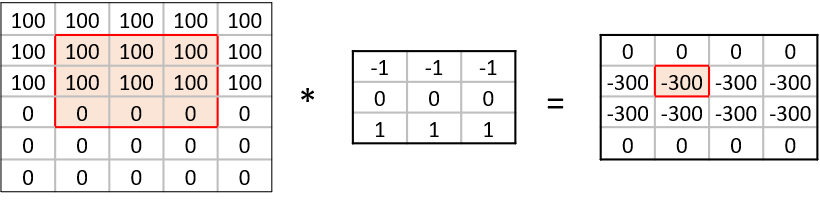
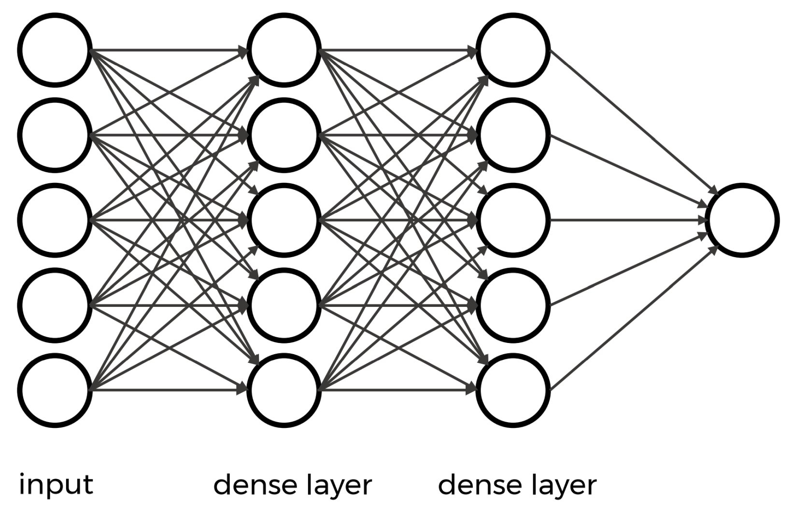
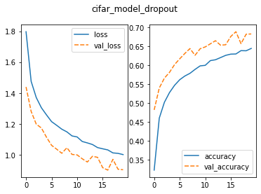
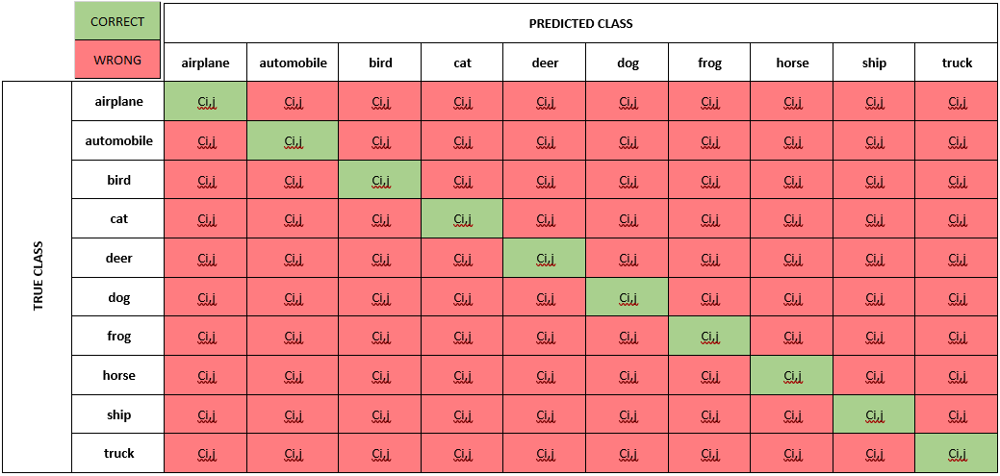
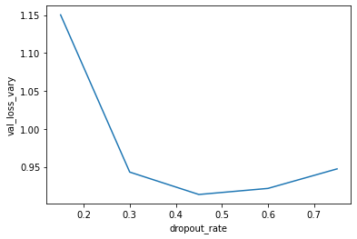
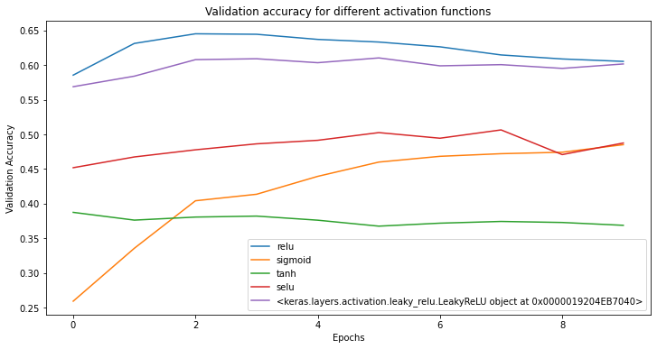

All in One View
Content from Introduction to Deep Learning
Last updated on 2026-06-14 | Edit this page
Estimated time: 10 minutes
Overview
Questions
- What is deep learning and how is it used for images?
- How can I train a simple model to classify images?
Objectives
- Describe what deep learning is and how it can be used for image classification
- Train a simple convolutional neural network (CNN) to classify images
Deep learning for image classification
In this lesson, we will use deep learning to classify images.
Deep learning is a type of machine learning that uses structures called neural networks. These networks learn patterns directly from data by adjusting their internal settings during training.
For image data, deep learning models can learn to recognise shapes, colours, and textures. By combining these simple patterns, they can identify more complex features such as objects in an image.
We will focus on a specific type of model called a Convolutional Neural Network (CNN). CNNs are designed for working with images and are widely used for tasks such as:
- recognising objects in photos
- identifying medical images
- classifying plants, animals, or other categories
In this lesson, we will train a CNN to classify images into different categories.
What is image classification?
Image classification is one of the most common tasks in deep learning and involves assigning a label to an image.
For example, a model might look at an image and decide whether it shows a:
- car or bicycle
- cat or dog
- healthy or diseased plant
In this lesson, we will train a CNN to look at images and predict the correct category for each one.
What we’ll do in this lesson
When working with programming problems, it’s useful to follow a series of steps or a workflow. Some workflows are very simple, while others — like deep learning — involve a few more stages.
In this lesson, we’ll follow a simplified version of a deep learning workflow to train and use an image classification model.
Step 1. Formulate / Outline the problem
First we must decide what we want our Deep Learning system to do. This lesson is about image classification and our aim is to put an image into one of a few categories. Specifically, in our case, we have 5 categories: [‘airplane’, ‘bird’, ‘cat’, ‘dog’, ‘truck’]
Step 2. Identify inputs and outputs
Next identify what the inputs and outputs of the neural network. In our case, the data is images and the inputs could be the individual pixels of the images. We want one output prediction for each potential image.
Step 3. Prepare data
Many datasets are not ready for immediate use in a deep learning and require some preparation. Neural networks can really only deal with numerical data, so any non-numerical data (e.g., images) have to be converted to numerical data.
For this lesson, we use an existing image dataset known as CIFAR-10 (Canadian Institute for Advanced Research).
More information on preparing data is explored in Episode 02 Introduction to Image Data but for now we’ll use a custom-defined function.
Python reminder: functions and methods
In Python, we can use functions in a few different ways:
- Built-in functions available by default:
print()orlen() - Functions from libraries we import:
tf.keras.layers.Conv2D() - Functions we write ourselves:
def
PYTHON
# load the required packages
import tensorflow as tf # neural network
import matplotlib.pyplot as plt # for plotting
import icwithcnn_functions as icfn # pre-defined helpers
### Step 3. Prepare data
# create a list of class names associated with each CIFAR-10 label
class_names = ['airplane', 'bird', 'cat', 'dog', 'truck']
# load the data
train_ds, val_ds, test_ds = icfn.prepare_datasets()OUTPUT
Found 1000 files belonging to 5 classes.
Found 250 files belonging to 5 classes.
Found 250 files belonging to 5 classes.Before starting any analysis, it’s important to check that your data looks the way you expect. Let’s do that now:
Visualise a subset of the CIFAR-10 dataset
PYTHON
# set up plot region, including width, height in inches
fig, axes = plt.subplots(figsize=(5,5))
# add images to plot
for images, labels in train_ds.take(1):
for i in range(9):
ax = plt.subplot(3, 3, i + 1)
plt.imshow(images[i].numpy().astype("uint8"))
plt.title(class_names[labels[i]])
plt.axis("off")
# view plot
plt.show()
Inspect the dataset
Looking at the images above, and knowing you will be asking a computer to label them, what kinds of questions might you ask yourself about this dataset?
Answers will vary.
- Are the images clear and easy to interpret?
- Do the labels seem correct?
- Are the images all the same size?
- Do the images look similar within each category?
- Are there any unusual or unexpected images?
Step 4. Choose a pre-trained model or build a new architecture from scratch
Often we can use an existing neural network instead of designing one from scratch because training a network can take a lot of time and computational resources. There are a number of well publicised networks which have been demonstrated to perform well at certain tasks. If you know of one which already does a similar task well, then it makes sense to use one of these.
If instead we decide to design our own network, then there a lot of decisions that have to be made. Model selection will require iterative experimentation and tweaking before acceptable results can be achieved.
In today’s workshop we want to build an architecture for training
purpurses. For now, similar to dataset preparation, we’ll use a function
already prepared, create_model_intro(), and save the
details for Episode 03 Build a Convolutional
Neural Network.
Step 5. Choose a loss function and optimizer and compile model
To set up a model for training we need to compile it. This is when you set up the rules and strategies for how your network is going to learn.
The loss function tells the training algorithm how far away the predicted value was from the true value.
The optimizer takes information from the loss function and applys some changes to the weights within the network to try to do better. It is through this process that “learning” (adjustment of the weights) is achieved.
We will learn how to choose a loss function and optimizer in more detail in Episode 4 Compile and Train (Fit) a Convolutional Neural Network.
For now, let’s use options that have been proven to work well for image classfiication tasks.
Step 6. Train the model
Now we can start training our neural network. Typically, we train the model by looping over the training data multiple times (called epochs) until performance improves or reaches a stable level.
Your output will begin to print similar to the output below:
OUTPUT
32/32 [==============================] - 0s 5ms/step - loss: 58.7726 - accuracy: 0.2690What does this output mean?
This output is printed during the fit phase, i.e. training the model against known image labels:
- It took 32 steps to look at all of the training
images once (called an
epoch) -
lossshows how wrong the model’s predictions are (lower is better) -
accuracyshows how often the model is correct (higher is better)
Is our model doing well?
Considering the loss and accuracy values
from the training above:
- What do these values tell you about how well the model is performing?
- Is this what you would expect at this stage?
- Can you think of any ways that might help improve these values?
Answers may vary.
- The accuracy is quite low, so the model is not making many correct
predictions yet
- The loss is high, which suggests the model’s predictions are still
far from the true labels
- This is expected, since the model has only just started training and is very simple
- Train for longer, use a more complex model, use more data
Step 7. Perform a Prediction/Classification
After training the network we can use it to perform predictions. This is how you would use the network after you have fully trained it to a satisfactory performance. The predictions performed here on a special hold-out set is used in the next step to measure the performance of the network. Make sure the images you use to test are prepared the same way as the training images.
To make a single prediction we need to first extract a single image and its associated label from our test dataset and then use our model to predict the class of that image.
PYTHON
# extract image and label for first image
for images, labels in test_ds.take(1):
first_image = images[0]
first_label = labels[0]
# use the model to predict class
prediction = model_intro.predict(tf.expand_dims(first_image, axis=0))
print("Predict:", prediction)
# extract class name with highest probability
predicted_label = tf.argmax(prediction[0])
print("Predicted class:", class_names[predicted_label])
print("True class:", class_names[first_label])OUTPUT
1/1 [==============================] - 0s 11ms/step
Predict: [[3.0071956e-01 9.7787231e-20 6.9927925e-01 5.2796623e-32 1.1614857e-06]]
Predicted class: cat
True class: airplaneCongratulations, you just created your first image classification model! Notice that the model doesn’t just give one answer — it assigns a probability to each class. The class with the highest probability becomes the prediction.
Was the classification correct? Let’s plot the first test image with its true label:
PYTHON
# display image
plt.imshow(test_images[0])
plt.title('Predicted:' + class_names[predicted_label])
plt.axis("off")
plt.show() 
Interpreting the prediction
Compare the model prediction with the true class name.
- What does this tell you about the model’s performance?
- Why might the model have made this mistake?
Answers may vary.
- The model made an incorrect prediction
- This shows the model has not yet learned enough to reliably
distinguish between classes
- This is expected, since the model is simple and has only trained for
a short time
- The image itself may also be unclear or difficult to classify
Clearly, our model can be improved — we’ll look at ways to do this later.
For now, we’ve trained a model and used it to make a prediction. The next step is to see how well it performs on data it hasn’t seen before.
Step 8. Measure Performance
Once we trained the network we want to measure its performance on data that was not part of the training process, called a test dataset. Although there are many indicators of how well our network performs - called metrics - often the chosen metric(s) will depend on the type of task.
Step 9. Tune Hyperparameters
When building image classification models in Python, especially using libraries like TensorFlow or Keras, the process involves not only designing a neural network but also choosing the best values for various parameters set by the person configuring the model - these are known as hyperparameters. Searching for the best options for your dataset can enhance model performance.
Step 10. Share Model
Once we’re happy with how our model performs, we can save it and share it with others. This includes both the model structure and what it has learned, so others can use it, with or without retraining.
To share the model we must save it.
We will return to each of these workflow steps throughout this lesson and discuss each component in more detail.
- Deep learning uses neural networks to learn patterns directly from data.
- Convolutional neural networks (CNNs) are commonly used for image classification.
- Training a model involves compiling it, fitting it to data, and making predictions.
- Model performance may be imperfect at first and can be improved with further training and tuning.
Content from Introduction to Image Data
Last updated on 2026-06-14 | Edit this page
Estimated time: 12 minutes
Overview
Questions
- How is image data organised for this workshop?
- How do I load image data into Python for deep learning?
- What are training, validation, and test datasets used for?
Objectives
- Describe how the workshop image dataset is organised into folders.
- Load image data using
keras.utils.image_dataset_from_directory(). - Inspect images, labels, and class names in a dataset.
- Explain the roles of training, validation, and test datasets.
In Episode 1, we used prepared data to train a simple image classification model.
In this episode, we’ll take a closer look at how image datasets are organised and loaded into Python.
Depending on your situation, you will either use a pre-existing dataset, prepare your own data for training or some combination of the two. In most cases, however, you will need to take some steps to prepare your data for training.
In this workshop, we’ll use a prepared dataset so we can focus on the deep learning workflow but in real-world projects, you may need to collect, label, resize, and split your own images.
Before jumping into more specific tasks, it’s important to understand thatmages on a computer are stored as numbers. For colour images, these numbers represent red, green, and blue (RGB) values.
Images are data
Images on a computer are stored as rectangular arrays of hundreds, thousands, or millions of discrete “picture elements,” otherwise known as pixels. Each pixel can be thought of as a single square point of coloured light.
For example, consider this image of a Jabiru, with a square area designated by a red box:

Now, if we zoomed in close enough to the red box, the individual pixels would stand out:

Note each square in the enlarged image area (i.e. each pixel) is all one colour, but each pixel can be a different colour from its neighbours. Viewed from a distance, these pixels seem to blend together to form the image.
Image data in this workshop
In this workshop, we use a small subset of the CIFAR-10 dataset containing images from five classes:
- airplane
- bird
- cat
- dog
- truck
For learning purposes, and to make computation faster, a much smaller, random selection of images from the full dataset was used
Most importantly, the data was split it into three distinct subsets: train, validation and test.
We use different parts of the dataset for different purposes:
- Training set: used to teach the model
- Validation set: used to check how the model is doing while we develop it
- Test set: used at the end to evaluate performance on unseen data
Keeping these sets separate helps us judge how well the model is likely to perform on new images.
Dataset organisation matters
The way your data is organised matters - it affects whether and how easily it can be used for image classification tasks.
For example, to use the
tf.keras.utils.image_dataset_from_directory() function
packaged with Tensorflow, we use folder names to indicate which split
the data belongs to and what class name to use as the label. This saves
us from having to label each image individually.
How the images are organised
Our images are stored in folders. Each class has its own folder, and the data is already split into training, validation, and test sets.
For example:
├── train/
│ ├── airplane/
│ ├── bird/
│ ├── cat/
│ ├── dog/
│ └── truck/
├── val/
│ ├── airplane/
│ ├── bird/
│ ├── cat/
│ ├── dog/
│ └── truck/
└── test/
├── airplane/
├── bird/
├── cat/
├── dog/
└── truck/Understanding the dataset structure
Look at the folder structure for the dataset.
- How many classes are included?
- How does Keras know which label belongs to each image?
- There are five classes.
- Keras uses the folder names as the class labels.
Understanding the dataset contents
The dataset contains 1500 images across 5 classes, split into training (1000), validation (250), and test (250).
- How many images would you expect in each split?
- How many images per class would you expect in the training set?
Training: 900 images
Validation: 250 images
Test: 300 images
Each class has 250 images total, so 150 per class in the training set
Load the datasets
In the last episode, we used one of the helper functions in
icwithcnn_functions.py to prepare our datasets:
icfn.prepare_datasets()
Let us now see how to write the code inside that helper function. This is the same type of dataset we used in Episode 1 — here we’re just seeing how it is created.
We’ll start with the training dataset since the other two will be
very similar and we’ll use the
tf.keras.utils.image_dataset_from_directory() function.
We want to specify:
- the file path to the top level folder for the data
- the size of the images in pixels (
image_size) - how many images to work with at a time
(
batch_size) - whether we want to
shufflethe images or load them sequentially - whether we want everyone in the class to have the same order of
images (
seed)
PYTHON
import tensorflow as tf
# create training dataeset from folder of cifar images
train_ds = tf.keras.utils.image_dataset_from_directory(
"../data/cifar10_images_small/train",
image_size = (32, 32),
batch_size = 32,
shuffle = True,
seed = 32
)
print(train_ds)OUTPUT
Found 1000 files belonging to 5 classes.
Train_ds: <_PrefetchDataset element_spec=(TensorSpec(shape=(None, 32, 32, 3), dtype=tf.float32, name=None), TensorSpec(shape=(None,), dtype=tf.int32, name=None))>The object returned by this function might look unfamiliar. Instead of loading all images at once, it loads them in batches as needed.
How do we inspect what was loaded?
Let us first extract class names directly from the dataset:
OUTPUT
['airplane', 'bird', 'cat', 'dog', 'truck']Then we can look at a single batch to find information about the training images and labels.
PYTHON
# inspect one batch of images and labels
for images, labels in train_ds.take(1):
print("Train images batch shape:", images.shape)
print("Train labels batch shape:", labels.shape)OUTPUT
Train images batch shape: (32, 32, 32, 3)
Train labels batch shape: (32,)These numbers represent (batch size, image height, image width, colour channels):
- There are 32 images in this batch
- Each image is 32 pixels high and 32 pixels wide
- Each image has 3 colour channels (RGB)
- There is one label for each image in the batch
Finally, we can look at the image data types and pixel values:
PYTHON
# inspect image data types and pixel values
for images, labels in train_ds.take(1):
print("Data type: ", images.dtype)
print("Pixel value range:", images[0].numpy().min(), images[0].numpy().max())OUTPUT
Data type: <dtype: 'float32'>
Pixel value range: 15.0 253.0A note about pixel values
The images are loaded with pixel values between 0 and 255.
In most cases, we rescale these values to make training more efficient.
In this workshop, we will do this inside the model before training.
On your own - prepare the Test dataset
Using what we’ve learned in this lesson with the training dataset, perform the same steps for the test dataset.
- Write the code to load the test data
- Hint 1: Turn
shuffleoff - Hint 2: Remove the
seed
- Inspect the
testdataset and find out:
- dimensions of the images and labels
- class names
- total number of images
- number of images in each of the five classes (optional)
PYTHON
# create test dataeset from folder of cifar images
test_ds = tf.keras.utils.image_dataset_from_directory(
"../data/cifar10_images_small/test",
image_size = (32, 32),
batch_size = 32,
shuffle = False,
)
# class names
print("Test class names: ", test_ds.class_names)
# dimensions of the images and labels
for images, labels in test_ds.take(1):
print("Test images batch shape:", images.shape)
print("Test labels batch shape:", labels.shape)
# total number of images
# 250 as noted previously
# images in each class
# ????We now understand how the function we use to prepare our data works which means we are ready to learn how to build a CNN.
- Images consist of pixels arranged in a particular order.
- Image datasets can be organised into folders where each folder represents a class.
-
image_dataset_from_directory()lets us load images without writing custom data preparation code. - Images are loaded in batches and represented as numerical arrays.
- Training, validation, and test sets are used to build and evaluate models.
https://www.tensorflow.org/api_docs/python/tf/keras/preprocessing/image [keras.utils.image_dataset_from_directory()]: https://keras.io/api/data_loading/image/
Content from Build a Convolutional Neural Network
Last updated on 2026-06-09 | Edit this page
Estimated time: 12 minutes
Overview
Questions
- What is a (artificial) neural network (ANN)?
- How is a convolutional neural network (CNN) different from an ANN?
- What are the types of layers used to build a CNN?
Objectives
- Understand how a convolutional neural network (CNN) differs from an artificial neural network (ANN).
- Explain the terms: kernel, filter.
- Know the different layers: convolutional, pooling, flatten, dense.
Neural Networks
A neural network is an artificial intelligence technique loosely based on the way neurons in the brain work.
A single neuron
Each neuron will:
- Take one or more inputs (\(x_1, x_2, ...\)), e.g., floating point numbers, each with a corresponding weight.
- Calculate the weighted sum of the inputs where ($w_1, w_2, … $) indicate weights.
- Add an extra constant weight (i.e. a bias term) to this weighted sum.
- Apply a non-linear function to the bias-adjusted weighted sum.
- Return one output value, again a floating point number.
One example equation to calculate the output for a neuron is:
\(output=ReLU(∑i(xi∗wi)+bias)\)

Combining multiple neurons into a network
Multiple neurons can be joined together by connecting the output of one to the input of another. These connections are also associated with weights that determine the ‘strength’ of the connection, and these weights are also adjusted during training. In this way, the combination of neurons and connections describe a computational graph, an example can be seen in the image below.
In most neural networks neurons are aggregated into layers. Signals travel from the input layer to the output layer, possibly through one or more intermediate layers called hidden layers. The image below illustrates an example of a neural network with three layers, each circle is a neuron, each line is an edge and the arrows indicate the direction data moves in.

{kind=link}
Neural networks aren’t a new technique, they have been around since the late 1940s. But until around 2010 neural networks tended to be quite small, consisting of only 10s or perhaps 100s of neurons. This limited them to only solving quite basic problems. Around 2010 improvements in computing power and the algorithms for training the networks made much larger and more powerful networks practical. These are known as deep neural networks or Deep Learning.
Convolutional Neural Networks
A convolutional neural network (CNN) is a type of artificial neural network (ANN) most commonly applied to analyze visual imagery. They are specifically designed for processing grid-like data, such as images, by leveraging convolutional layers that preserve spatial relationships, when extracting features.
Step 4. Build an architecture from scratch or choose a pretrained model
Let us explore how to build a neural network from scratch. Although this sounds like a daunting task, with Keras it is surprisingly straightforward. With Keras you compose a neural network by creating layers and linking them together.
Parts of a neural network
There are three main components of a neural network:
- CNN Part 1. Input Layer
- CNN Part 2. Hidden Layers
- CNN Part 3. Output Layer
The output from each layer becomes the input to the next layer.
CNN Part 1. Input Layer
The Input in Keras gets special treatment when images are used. Keras
automatically calculates the number of inputs and outputs a specific
layer needs and therefore how many edges need to be created. This means
we just need to let Keras know how big our input is going to be. We do
this by instantiating a keras.Input class and passing it a
tuple to indicate the dimensionality of the input data. In Python, a
tuple is a data type used to store collections of data.
It is similar to a list, but tuples are immutable, meaning once they are
created, their contents cannot be changed.
The input layer is created with the keras.Input function
and its first parameter is the expected shape of the input:
keras.Input(shape=None, batch_size=None, dtype=None, sparse=None, batch_shape=None, name=None, tensor=None)In our case, the shape of an image is defined by its pixel dimensions and number of channels:
OUTPUT
(40000, 32, 32, 3) # number of images, image width in pixels, image height in pixels, number of channels (RGB)CHALLENGE Create the input layer for our network
Hint 1: Specify shape argument only and use defaults for the rest.
Hint 2: The shape of our input dataset includes the total number of images. We want to take a slice of the shape for a single individual image to use an input.
OUTPUT
# CNN Part 1
# Input layer of 32x32 images with three channels (RGB)
inputs_intro = keras.Input(shape=train_images.shape[1:])CNN Part 2. Hidden Layers
The next component consists of the so-called hidden layers of the network.
In a neural network, the input layer receives the raw data, and the output layer produces the final predictions or classifications. These layers’ contents are directly observable because you can see the input data and the network’s output predictions.
However, the hidden layers, which lie between the input and output layers, contain intermediate representations of the input data. These representations are transformed through various mathematical operations performed by the network’s neurons. The specific values and operations within these hidden layers are not directly accessible or interpretable from the input or output data. Therefore, they are considered “hidden” from external observation or inspection.
In a CNN, the hidden layers typically consist of convolutional, pooling, reshaping (e.g., Flatten), and dense layers.
Check out the Layers API section of the Keras documentation for each layer type and its parameters.
Convolutional Layers
A convolutional layer is a fundamental building block in a CNN designed for processing structured, gridded data, such as images. It applies convolution operations to input data using learnable filters or kernels, extracting local patterns and features (e.g. edges, corners). These filters enable the network to capture hierarchical representations of visual information, allowing for effective feature learning.
To find the particular features of an image, CNNs make use of a concept from image processing that precedes Deep Learning.
A convolution matrix, or kernel, is a matrix transformation that we ‘slide’ over the image to calculate features at each position of the image. For each pixel, we calculate the matrix product between the kernel and the pixel with its surroundings. Here is one example of a 3x3 kernel used to detect edges:
[[-1, -1, -1],
[0, 0, 0]
[1, 1, 1]]This kernel will give a high value to a pixel if it is on a horizontal border between dark and light areas.
In the following image, the effect of such a kernel on the values of a single-channel image stands out. The red cell in the output matrix is the result of multiplying and summing the values of the red square in the input, and the kernel. Applying this kernel to a real image demonstrates it does indeed detect horizontal edges.


There are several types of convolutional layers available in Keras depending on your application. We use the two-dimensional layer typically used for images:
keras.layers.Conv2D(filters, kernel_size, strides=(1, 1), padding="valid", activation=None, **kwargs)-
filtersis the number of filters in this layer.- This is one of the hyperparameters of our system and should be chosen carefully.
- Good practice is to start with a relatively small number of filters in the first layer to prevent overfitting.
- Choosing a number of filters as a power of two (e.g., 32, 64, 128) is common.
-
kernel sizeis the size of the convolution matrix which we already discussed.- Smaller kernels are often used to capture fine-grained features.
- Odd-sized filters are preferred because they have a centre pixel which helps maintain spatial symmetry during convolutions.
-
activationspecifies which activation function to use.
When specifying layers, remember each layer’s output is the input to the next layer. We must create a variable to store a reference to the output so we can pass it to the next layer. The basic format for doing this is:
output_variable = layer_name(layer_arguments)(input_variable)CHALLENGE Create a 2D convolutional layer for our network
Create a Conv2D layer with 16 filters, a 3x3 kernel size, and the ‘relu’ activation function.
Here we choose relu which is one of the most
commonly used in deep neural networks that is proven to work well. We
will discuss activation functions later in Step 9. Tune
hyperparameters but to satisfy your curiosity,
ReLU stands for Rectified Linear Unit (ReLU).
Hint 1: The input to each layer is the output of the previous layer.
OUTPUT
# CNN Part 2
# Convolutional layer with 16 filters, 3x3 kernel size, and ReLU activation
x_intro = keras.layers.Conv2D(filters=16, kernel_size=(3,3), activation='relu')(inputs_intro)Playing with convolutions
Convolutions applied to images can be hard to grasp at first. Fortunately, there are resources out there that enable users to interactively play around with images and convolutions:
Image kernels explained illustrates how different convolutions can achieve certain effects on an image, like sharpening and blurring.
The convolutional neural network cheat sheet provides animated examples of the different components of convolutional neural nets.
Pooling Layers
The convolutional layers are often intertwined with Pooling layers. As opposed to the convolutional layer used in feature extraction, the pooling layer alters the dimensions of the image and reduces it by a scaling factor effectively decreasing the resolution of your picture.
The rationale behind this is that higher layers of the network should focus on higher-level features of the image. By introducing a pooling layer, the subsequent convolutional layer has a broader ‘view’ on the original image.
Similar to convolutional layers, Keras offers several pooling layers and one used for images (2D spatial data):
keras.layers.MaxPooling2D(pool_size=(2, 2), strides=None, padding="valid", data_format=None, name=None, **kwargs)-
pool_sizeis the size of the pooling window.- In Keras, the default is usually (2, 2).
The function downsamples the input along its spatial dimensions (height and width) by taking the maximum value over an input window (of size defined by pool_size) for each channel of the input. By taking the maximum instead of the average, the most prominent features in the window are emphasized.
For example, a 2x2 pooling size reduces the width and height of the input by a factor of 2. Empirically, a 2x2 pooling size has been found to work well in various for image classification tasks and also strikes a balance between down-sampling for computational efficiency and retaining important spatial information.
OUTPUT
# Pooling layer with input window sized 2x2
x_intro = keras.layers.MaxPooling2D(pool_size=(2,2))(x_intro)Dense layers
A dense layer is a fully connected layer where each neuron receives input from every neuron in the previous layer. When connecting the layer to its input and output layers every neuron in the dense layer gets an edge (i.e. connection) to all of the input neurons and all of the output neurons.

This layer aggregates global information about the features learned in previous layers to make a decision about the class of the input.
In Keras, a densely-connected layer is defined:
keras.layers.Dense(units, activation=None, **kwargs)-
unitsin this case refers to the number of neurons.
The choice of how many neurons to specify is often determined through experimentation and can impact the performance of our CNN. Too few neurons may not capture complex patterns in the data but too many neurons may lead to overfitting.
OUTPUT
# Dense layer with 64 neurons and ReLU activation
x_intro = keras.layers.Dense(units=64, activation='relu')(x_intro)Reshaping Layers: Flatten
The next type of hidden layer used in our introductory model is a
type of reshaping layer defined in Keras by the
keras.layers.Flatten class. It is necessary when
transitioning from convolutional and pooling layers to fully connected
layers.
keras.layers.Flatten( ... ))
The Flatten layer converts the output of the previous layer into a single one-dimensional vector that can be used as input for a dense layer.
OUTPUT
# Flatten layer to convert 2D feature maps into a 1D vector
x_intro = keras.layers.Flatten()(x_intro)A flatten layer function is typically used to transform the two-dimensional arrays (matrices) generated by the convolutional and pooling layers into a one-dimensional array. This is necessary when transitioning from the convolutional/pooling layers to the fully connected layers, which require one-dimensional input.
During the convolutional and pooling operations, a neural network extracts features from the input images, resulting in multiple feature maps, each represented by a matrix. These feature maps capture different aspects of the input image, such as edges, textures, or patterns. However, to feed these features into a fully connected layer for classification or regression tasks, they must be a single vector.
The flatten layer takes each element from the feature maps and arranges them into a single long vector, concatenating them along a single dimension. This transformation preserves the spatial relationships between the features in the original image while providing a suitable format for the fully connected layers to process.
Is one layer of each type enough?
Not for complex data!
A typical architecture for image classification is likely to include at least one convolutional layer, one pooling layer, one or more dense layers, and possibly a flatten layer.
Convolutional and Pooling layers are often used together in multiple sets to capture a wider range of features and learn more complex representations of the input data. Using this technique, the network can learn a hierarchical representation of features, where simple features detected in early layers are combined to form more complex features in deeper layers.
There isn’t a strict rule of thumb for the number of sets of convolutional and pooling layers to start with, however, there are some guidelines.
We are starting with a relatively small and simple architecture because we are limited in time and computational resources. A simple CNN with one or two sets of convolutional and pooling layers can still achieve decent results for many tasks but for your network you will experiment with different architectures.
OUTPUT
# CNN Part 2
# Convolutional layer with 16 filters, 3x3 kernel size, and ReLU activation
x_intro = keras.layers.Conv2D(filters=16, kernel_size=(3,3), activation='relu')(inputs_intro)
# Pooling layer with input window sized 2x2
x_intro = keras.layers.MaxPooling2D(pool_size=(2,2))(x_intro)
# Second Convolutional layer with 32 filters, 3x3 kernel size, and ReLU activation
x_intro = keras.layers.Conv2D(filters=32, kernel_size=(3,3), activation='relu')(x_intro)
# Second Pooling layer with input window sized 2x2
x_intro = keras.layers.MaxPooling2D(pool_size=(2,2))(x_intro)
# Flatten layer to convert 2D feature maps into a 1D vector
x_intro = keras.layers.Flatten()(x_intro)
# Dense layer with 64 neurons and ReLU activation
x_intro = keras.layers.Dense(units=64, activation='relu')(x_intro)CNN Part 3. Output Layer
Recall for the outputs we asked ourselves what we want to identify from the data. If we are performing a classification problem, then typically we have one output for each potential class.
In traditional CNN architectures, a dense layer is typically used as the final layer for classification. This dense layer receives the flattened feature maps from the preceding convolutional and pooling layers and outputs the final class probabilities or regression values.
For multiclass data, the softmax activation is used
instead of relu because it helps the computer give each
option (class) a likelihood score, and the scores add up to 100 per
cent. This way, it’s easier to pick the one the computer thinks is most
probable.
CHALLENGE Create an Output layer for our network
Use a dense layer to create the output layer for a classification problem with 10 possible classes.
Hint 1: The input to each layer is the output of the previous layer.
Hint 2: The units (neurons) should be the same as number of classes as our dataset.
Hint 3: Use softmax activation.
OUTPUT
# CNN Part 3
# Output layer with 10 units (one for each class) and softmax activation
outputs_intro = keras.layers.Dense(units=10, activation='softmax')(x_intro)Putting it all together
Once you decide on the initial architecture of your CNN, the last
step to create the model is to bring all of the parts together using the
keras.Model class.
There are several ways of grouping the layers into an object as described in the Keras Models API.
We will use the Functional API to create our model using the inputs and outputs defined in this episode.
keras.Model(inputs=inputs, outputs=outputs)Note that there is additional argument that can be passed to the
keras.Model class called name that takes a string. Although
it is no longer specified in the documentation, the name
argument is useful when deciding among different architectures.
CHALLENGE Create a function that defines an introductory CNN
Using the keras.Model class and the input, hidden, and output layers from the previous challenges, create a function that returns the CNN from the introduction.
Hint 1: Name the model “cifar_model_intro”
OUTPUT
def create_model_intro():
# CNN Part 1
# Input layer of 32x32 images with three channels (RGB)
inputs_intro = keras.Input(shape=train_images.shape[1:])
# CNN Part 2
# Convolutional layer with 16 filters, 3x3 kernel size, and ReLU activation
x_intro = keras.layers.Conv2D(filters=16, kernel_size=(3,3), activation='relu')(inputs_intro)
# Pooling layer with input window sized 2x2
x_intro = keras.layers.MaxPooling2D(pool_size=(2,2))(x_intro)
# Second Convolutional layer with 32 filters, 3x3 kernel size, and ReLU activation
x_intro = keras.layers.Conv2D(filters=32, kernel_size=(3,3), activation='relu')(x_intro)
# Second Pooling layer with input window sized 2x2
x_intro = keras.layers.MaxPooling2D(pool_size=(2,2))(x_intro)
# Flatten layer to convert 2D feature maps into a 1D vector
x_intro = keras.layers.Flatten()(x_intro)
# Dense layer with 64 neurons and ReLU activation
x_intro = keras.layers.Dense(units=64, activation='relu')(x_intro)
# CNN Part 3
# Output layer with 10 units (one for each class) and softmax activation
outputs_intro = keras.layers.Dense(units=10, activation='softmax')(x_intro)
# create the model
model_intro = keras.Model(inputs = inputs_intro,
outputs = outputs_intro,
name = "cifar_model_intro")
return model_introWe now have a function that defines the introduction model.
We can use this function to create the introduction model and and
view a summary of its structure using the Model.summary
method.
PYTHON
# create the introduction model
model_intro = create_model_intro()
# view model summary
model_intro.summary()OUTPUT
Model: "cifar_model_intro"
_________________________________________________________________
Layer (type) Output Shape Param #
=================================================================
input_1 (InputLayer) [(None, 32, 32, 3)] 0
conv2d (Conv2D) (None, 30, 30, 16) 448
max_pooling2d (MaxPooling2 (None, 15, 15, 16) 0
D)
conv2d_1 (Conv2D) (None, 13, 13, 32) 4640
max_pooling2d_1 (MaxPoolin (None, 6, 6, 32) 0
g2D)
flatten (Flatten) (None, 1152) 0
dense (Dense) (None, 64) 73792
dense_1 (Dense) (None, 10) 650
=================================================================
Total params: 79530 (310.66 KB)
Trainable params: 79530 (310.66 KB)
Non-trainable params: 0 (0.00 Byte)
_________________________________________________________________The Model.summary() output has three columns:
- Layer (type) lists the name and type of each layer.
- Remember the ‘name’ argument we used to name our model? This argument can also be supplied to each layer. If a name is not provided, Keras will assign a unique identifier starting from 1 and incrementing for each new layer of the same type within the model.
- Output Shape describes the shape of the output produced by each
layer as (batch_size, height, width, channels).
- Batch size is the number of samples processed in each batch during training or inference. This dimension is often denoted as None in the summary because the batch size can vary and is typically specified during model training or inference.
- Height, Width, Channels: The remaining dimensions represent the spatial dimensions and the number of channels in the output tensor. For convolutional layers and pooling layers, the height and width dimensions typically decrease as the network progresses through the layers due to the spatial reduction caused by convolution and pooling operations. The number of channels may change depending on the number of filters in the convolutional layer or the design of the network architecture.
- For example, in a convolutional layer, the output shape (None, 30,
30, 16) means:
- None: The batch size can vary.
- 30: The height and width of the output feature maps are both 30 pixels.
- 16: There are 16 channels in the output feature maps, indicating that the layer has 16 filters.
- Param # displays the number of parameters (weights and biases)
associated with each layer.
- The total number of parameters in a layer is calculated as follows:
- Total parameters = (number of input units) × (number of output units) + (number of output units)
- At the bottom of the Model.summary() you will find the number of
Total parameters and their size; the number of Trainable parameters and
their size; and the number of Non-trainable parameters and their size.
- In most cases, the total number of parameters will match the number of trainable parameters. In other cases, such as models using normalization layers, there will be some parameters that are fixed during training and not trainable.
- Disclaimer: We explicitly decided to focus on building a foundational understanding of convolutional neural networks for this course without delving into the detailed calculation of parameters. However, as your progress on your deep learning journey it will become increasingly important for you to understand parameter calculation in order to optimize model performance, troubleshoot issues, and design more efficient CNN architectures.
- The total number of parameters in a layer is calculated as follows:
How to choose an architecture?
For this neural network, we had to make many choices, including the number of hidden neurons. Other choices to be made are the number of layers and type of layers. You might wonder how you should make these architectural choices. Unfortunately, there are no clear rules to follow here, and it often boils down to a lot of trial and error. It is recommended to explore what others have done with similar data sets and problems. Another best practice is to start with a relatively simple architecture and then add layers and tweak the network to test if performance increases.
We have a model now what?
This CNN should be able to run with the CIFAR-10 data set and provide reasonable results for basic classification tasks. However, do keep in mind this model is relatively simple, and its performance may not be as high as more complex architectures. The reason it’s called deep learning is because, in most cases, the more layers we have, i.e. the deeper and more sophisticated CNN architecture we use, the better the performance.
How can we judge a model’s performance? We can inspect a couple metrics produced during the training process to detect whether our model is underfitting or overfitting. To do that, we continue with the next steps in our Deep Learning workflow, Step 5. Choose a loss function and optimizer and Step 6. Train model.
- Artificial neural networks (ANN) are a machine learning technique based on a model inspired by groups of neurons in the brain.
- Convolution neural networks (CNN) are a type of ANN designed for image classification and object detection.
- The number of filters corresponds to the number of distinct features the layer is learning to recognise whereas the kernel size determines the level of features being captured.
- A CNN can consist of many types of layers including convolutional, pooling, flatten, and dense (fully connected) layers
- Convolutional layers are responsible for learning features from the input data.
- Pooling layers are often used to reduce the spatial dimensions of the data.
- The flatten layer is used to convert the multi-dimensional output of the convolutional and pooling layers into a flat vector.
- Dense layers are responsible for combining features learned by the previous layers to perform the final classification.
Content from Compile and Train (Fit) a Convolutional Neural Network
Last updated on 2026-06-09 | Edit this page
Estimated time: 12 minutes
Overview
Questions
- How do you compile a convolutional neural network (CNN)?
- What is a loss function?
- What is an optimizer?
- How do you train (fit) a CNN?
- How do you evaluate a model during training?
- What is overfitting?
Objectives
- Explain the difference between compiling and training (fitting) a CNN.
- Know how to select a loss function for your model.
- Understand what an optimizer is.
- Define the terms: learning rate, batch size, epoch.
- Understand what loss and accuracy are and how to monitor them during training.
- Explain what overfitting is and what to do about it.
Step 5. Choose a loss function and optimizer and compile model
We have designed a convolutional neural network (CNN) that in theory we should be able to train to classify images.
We now need to compile the model, or set up the rules and strategies for how the network will learn. To do this, we select an appropriate loss function and optimizer to use during training (fitting).
The Keras method to compile a model is found in the Model training APIs section of the documentation and has the following structure:
Model.compile(
optimizer="rmsprop",
loss=None,
metrics=None,
...
)The three arguments we want to set for this method are for the optimizer, the loss, and the metrics parameters.
Optimizer
An optimizer in this case refers to the algorithm with which the model learns to optimize on the provided loss function, or minimise the model error. In other words, the optimizer is responsible for taking the output of the loss function and then applying some changes to the weights within the network. It is through this process that the “learning” (adjustment of the weights) is achieved.
We need to choose an optimizer and, if this optimizer has parameters, decide what values to use for those. Similar to other hyperparameters, the choice of optimizer depends on the problem you are trying to solve, your model architecture, and your data.
Adam
Here we picked one of the most common optimizers demonstrated to work well for most tasks, the Adam optimizer, as our starting point.
In Keras, Adam is defined by the keras.optimizers.Adam
class and it has many parameters. For this introductory course, we will
accept the default arguments but we highly recommend you investigate all
of them if you decide to use this optimizer for your project.
For now, though, we do want to highlight the first parameter.
The Learning rate is a hyperparameter that determines the step size at which the model’s weights are updated during training. You can think of this like the pace of learning for your model because it’s basically how big (or small) a step your model takes to learn from its mistakes. Too high, and it might overshoot the optimal values; too low, and it might take forever to learn.
The learning rate may be fixed and remain constant throughout the entire training process or it may be adaptive and dynamically change during training.
The Keras optimizer documentation describes the other optimizers available to choose from. A couple more popular or famous ones include:
Stochastic Gradient Descent (sgd): Stochastic Gradient Descent (SGD) is one of the fundamental optimization algorithms used to train machine learning models, especially neural networks. It is a variant of the gradient descent algorithm, designed to handle large datasets efficiently.
-
Root Mean Square (rms)prop: RMSprop is widely used in various deep learning frameworks and is one of the predecessors of more advanced optimizers like Adam, which further refines the concept of adaptive learning rates. It is an extension of the basic Stochastic Gradient Descent (SGD) algorithm and addresses some of the challenges of SGD.
- For example, one of the main issues with the basic SGD is that it uses a fixed learning rate for all model parameters throughout the training process. This fixed learning rate can lead to slow convergence or divergence (over-shooting) in some cases. RMSprop introduces an adaptive learning rate mechanism to address this problem.
ChatGPT
Learning rate is a hyperparameter that determines the step size at which the model’s parameters are updated during training. A higher learning rate allows for more substantial parameter updates, which can lead to faster convergence, but it may risk overshooting the optimal solution. On the other hand, a lower learning rate leads to smaller updates, providing more cautious convergence, but it may take longer to reach the optimal solution. Finding an appropriate learning rate is crucial for effectively training machine learning models.
The figure below illustrates how a small learning rate will not traverse toward the minima of the gradient descent algorithm in a timely manner, i.e. number of epochs.

On the other hand, specifying a learning rate that is too high will result in a loss value that never approaches the minima. That is, ‘bouncing between the sides’, thus never reaching a minima to cease learning.

Finally, a modest learning rate will ensure that the product of multiplying the scalar gradient value and the learning rate does not result in too small steps, nor a chaotic bounce between sides of the gradient where steepness is greatest.

Loss function
The loss function tells the training algorithm how wrong, or how ‘far away’ from the true value, the predicted value is. The purpose of loss functions is to compute the quantity that a model should seek to minimize during training. Which class of loss functions you choose depends on your task.
Loss for classification
For classification purposes, there are a number of probabilistic
losses to choose from. Here we chose
CategoricalCrossentropy because we want to compute the
difference between our one-hot encoded class labels and the model
predictions and this loss function is appropriate when the data has two
or more label classes.
It is defined by the
keras.losses.CategoricalCrossentropy class.
More information about loss functions can be found in the Keras loss documentation.
Metrics
After we select the desired optimizer and loss function we specify the metric(s) to be evaluated by the model during training and testing. A metric is a function used to judge the performance of the model.
Metric functions are similar to loss functions, except the results from evaluating a metric are not used when training the model. Note you can also use any loss function as a metric. The Keras metrics documentation provides a list of potential metrics.
Typically, for classification problems, you will use
keras.metrics.CategoricalAccuracy, which calculates how
often the model predictions match the true labels.
The accuracy function creates two local variables, total and count, that it uses to compute the frequency with which predictions matches labels. This frequency is ultimately returned as accuracy: an operation that divides the total by count.
Now that we selected which optimizer, loss function, and metric to use, we want to compile the model, or prepare it for training.
CHALLENGE Write the code to compile the introductory model
OUTPUT
# compile the model
model_intro.compile(optimizer = keras.optimizers.Adam(),
loss = keras.losses.CategoricalCrossentropy(),
metrics = keras.metrics.CategoricalAccuracy())Step 6. Train (Fit) model
We are ready to train the model.
Training a model means teaching the computer to recognize patterns in data by adjusting its internal parameters, or iteratively comparing its predictions with the actual outcomes to minimize errors. The result is a model capable of making accurate predictions on new, unseen data.
Training the model is done using the Model.fit
method:
Model.fit(
x=None,
y=None,
batch_size=None,
epochs=1,
validation_data=None,
...
)For this introductory course, the arguments we will specify are x, y, batch_size, epochs, and validation data.
- x refers to the input data, which in our case is the training data
- y refers to the target data, which in our case is the corresponding image labels
-
batch size determines the number of training
samples processed together before updating the model’s parameters during
each iteration (or mini-batch) of training.
- Choosing the right batch size depends on various factors, including your memory constraints, the model complexity, computational resources, and trial and error!
- In general, smaller batch sizes may require more iterations to cover the entire dataset, which can lead to longer training times. Larger batch sizes contribute to a smoother learning process, i.e. more consistent updates to the model’s parameters, but might not generalise well to new, unseen data.
- In practice, common sizes range from 32 to 256.
-
epochs In one epoch, every sample in the training
data will be given to the neural network and used to update its
parameters.
- In general, CNN models improve with more epochs of training, but only to a point.
- validation_data is the data used to evaluate loss and model metrics at the end of each epoch. The model will not be trained on this data.
The Model.fit method returns a History
object that records the training loss values and metrics. If we want to
keep this data, we need to create a new variable to capture the
return.
The weights and biases learned during the training process are stored directly within the model object itself.
Other parameters used to fit our model can be found in the documentation for the Keras fit method.
CHALLENGE Write the code to fit the introductory model
Use the Model.fit function to train (fit) the
model_intro.
Hint 1: Use a batch size of 32.
Hint 2: Train for 10 epochs.
Hint 3: Use a tuple of the form (x_val, y_val) and our validation dataset variable names.
Hint 4: Store the training loss and metrics in a variable call ‘history_intro’
OUTPUT
# fit the model
history_intro = model_intro.fit(x = train_images, y = train_labels,
batch_size = 32,
epochs = 10,
validation_data = (val_images, val_labels))ChatGPT
The choice of batch size can have various implications, and there are situations where using different batch sizes can be beneficial. There is no one-size-fits-all answer.
Large Datasets and Memory Constraints: If you have a large dataset and limited memory, using a smaller batch size can help fit the data into memory during training. This allows you to train larger models or use more complex architectures that might not fit with larger batch sizes.
Training on GPUs: Modern deep learning frameworks and libraries are optimized for parallel processing on GPUs. Using larger batch sizes can fully leverage the parallelism of GPUs and lead to faster training times. However, the choice of batch size should consider the available GPU memory.
Noise in Parameter Updates: Smaller batch sizes introduce more noise in the gradients, which can help models escape sharp minima and potentially find better solutions. This regularization effect is similar to the impact of stochasticity in Stochastic Gradient Descent (SGD).
Generalization: Using smaller batch sizes may improve the generalization of the model. It prevents the model from overfitting to the training data, as it gets updated more frequently and experiences more diverse samples during training.
It’s essential to consider the trade-offs of using different batch sizes. While larger batch sizes may provide more stable gradients during training, there could be a trade-off where the model might not generalise as effectively to new, unseen data. It’s a common consideration in machine learning to find a balance between stable training and the ability to generalize well to diverse examples. You should experiment with different batch sizes to find the best-performing one for your specific model, architecture, and dataset.
Before moving on, let us quickly save our model object.
We will discuss this method in more detail in Episode 6 Share a Convolutional Neural Network and Next Steps but for now just copy and paste.
Monitor Training Progress (aka Model Evaluation during Training)
We now know more about the compilation and fitting of CNNs and have a
trained model. How do we know if it is any good? We can inspect the
training metrics we stored in our History object.
Using seaborn, a Python data visualization library based on matplotlib that provides a high-level interface for drawing attractive and informative statistical graphics, we can plot the training process using the history:
PYTHON
import seaborn as sns
import pandas as pd
# convert the model history to a dataframe for plotting
history_intro_df = pd.DataFrame.from_dict(history_intro.history)
# plot the loss and accuracy from the training process
fig, axes = plt.subplots(1, 2)
fig.suptitle('cifar_model_intro')
sns.lineplot(ax=axes[0], data=history_intro_df[['loss', 'val_loss']])
sns.lineplot(ax=axes[1], data=history_intro_df[['categorical_accuracy', 'val_categorical_accuracy']])
This plot is used to identify whether the training is well configured or whether there are problems to address. The solid blue lines represent the training loss and accuracy; the dashed orange lines represent the validation loss and accuracy.
CHALLENGE Inspect the Training Curve
Inspect the training curves we have just made and recall the difference between the training and the validation datasets.
- How does the training progress look?
- Does the loss increase or decrease?
- What about the accuracy?
- Do either change fast or slowly?
- Do the graphs lines fluctuate or go up and down frequently?
- Do you think the resulting trained network will work well on the test set?
- Key things to look for for:
- Loss
- The loss curve should drop quickly in a relatively smooth line with little to no fluctuations.
- The val_loss curve should decrease along with the loss.
- Accuracy
- The accuracy should increase quickly in a relatively smooth line with little to no fluctuations.
- The val_accuracy should behave similarly
- Loss
- The results of the training give very little information on its performance on a test set. You should be careful not to use it as an indication of a well trained network.
Note the training loss continues to decrease, while the validation loss stagnates, and even starts to increase over the course of the epochs. Similarly, the accuracy for the validation set does not improve anymore after some epochs.
This is evidence of overfitting in these plots. If a model is overfitting, it means the model performs exceptionally well on the training data, but poorly on the validation data. Overfitting occurs when the model has learned to memorize the noise and specific patterns in the training data instead of generalizing the underlying relationships. As a result, the model fails to perform well on new, unseen, data because it has become too specialized to the training set.
Key characteristics of an overfit model include:
High Training Accuracy, Low Validation Accuracy: The model achieves high accuracy on the training data but significantly lower accuracy on the validation (or test) data.
Small Training Loss, Large Validation Loss: The training loss is low, indicating the model’s predictions closely match the true labels in the training set. However, the validation loss is high, indicating the model’s predictions are far from the true labels in the validation set.
How to Address Overfitting:
- Reduce the model’s complexity by using fewer layers or units to make it less prone to overfitting.
- Collect more training data if possible to provide the model with a diverse and representative dataset.
- Perform data augmentation to artificially increase the size of the training data and introduce variability.
Underfitting occurs when the model is too simple or lacks the capacity to capture the underlying patterns and relationships present in the data. As a result, the model’s predictions are not accurate, and it fails to generalize well to unseen data.
Key characteristics of an underfit model include:
- Large Training Loss: The training loss (error) is high, indicating the model’s predictions are far from the true labels in the training set.
- Increasing validation loss.
- Low Validation Accuracy: This indicates the model is not learning from the data effectively.
How to address underfitting:
- Perform data augmentation or feature engineering to provide the model with more informative input features.
- Train the model for more epochs to give it more time to learn from the data.
- Increase the model’s complexity by adding more layers or units to the existing layers.
Improve Model Generalization (avoid Overfitting)
Techniques to avoid overfitting, or to improve model generalization, are termed regularization techniques. A short list of some of these include data augmentation and dropout.
Dropout
One of the most versatile regularization technique is dropout (Srivastava et al., 2014). Dropout essentially means that during each training cycle a random fraction of the dense layer nodes are turned off. This is described with the dropout rate between zero and one, which determines the fraction of nodes to silence at a time.

The intuition behind dropout is that it enforces redundancies in the network by constantly removing different elements of a network. The model can no longer rely on individual nodes and instead must create multiple “paths”.
In addition, the model has to make predictions with much fewer nodes and weights (connections between the nodes). As a result, it becomes much harder for a network to memorize particular features. At first this might appear a quite drastic approach which affects the network architecture strongly. In practice, however, dropout is computationally a very elegant solution which does not affect training speed. And it frequently works very well.
Dropout layers will only randomly silence nodes during training! During the prediction step, all nodes remain active (dropout is off). During training, the sample of nodes that are silenced are different for each training instance, or batch, to give all nodes a chance to observe enough training data to learn its weights.
Dropout layers are defined by the keras.layers.Dropout
class and have the following definition:
keras.layers.Dropout(rate, ...)- The
rateparameter is a float between 0 and 1 and represents the fraction of the input units to drop.- Good advice is to begin with a small dropout rate, such as 0.1 or 0.2, and gradually increase it if necessary.
- However, a dropout rate of 0.5 is also commonly used and can be a good starting point for many models.
The placement of the dropout layer also matters because adding dropout before or after certain layers can have different effects. Although dropout layers are commonly added between dense layers, you will find network architectures with dropout just about everywhere. Be sure to experiment with different dropout rates and placements to find the optimal configuration for your model and dataset.
CHALLENGE Create a function that defines a CNN with Dropout
Use the create_model_intro() definition as the template,
create a new function called create_model_dropout()
Hint 1: Add one Dropout Layer that randomly drops 50 per cent of the input units.
Hint 2: Consider adding an additional layer(s) from one of the four layers we discussed.
OUTPUT
def create_model_dropout():
"""
Dropout Model Definition
INPUT: 32x32 images with three channels (RGB)
Layer 1: convolutional, 16 filters, 3x3 kernel, ReLU activation
Layer 2: max pooling, 2x2 window
Layer 3: convolutional, 32 filters, 3x3 kernel, ReLU activation
Layer 4: max pooling, 2x2 window
Layer 5: convolutional, 64 filters, 3x3 kernel, ReLU activation
Layer 6: dropout layer, 50% of input units
Layer 7: flatten to 1D
Layer 8: dense layer, 64 units, ReLU activation
OUTPUT: dense layer, 10 units (one per class), softmax activation
"""
# CNN Part 1 INPUT LAYER
inputs_dropout = keras.Input(shape=train_images.shape[1:]) # INPUT LAYER
# CNN Part 2 HIDDEN LAYERS
x_dropout = keras.layers.Conv2D(filters=16, kernel_size=(3,3), activation='relu')(inputs_dropout) # Layer 1
x_dropout = keras.layers.MaxPooling2D(pool_size=(2,2))(x_dropout) # Layer 2
x_dropout = keras.layers.Conv2D(filters=32, kernel_size=(3,3), activation='relu')(x_dropout) # Layer 3
x_dropout = keras.layers.MaxPooling2D(pool_size=(2,2))(x_dropout) # Layer 4
x_dropout = keras.layers.Conv2D(filters=64, kernel_size=(3,3), activation='relu')(x_dropout) # Layer 5 # This is new!
x_dropout = keras.layers.Dropout(rate=0.5)(x_dropout) # Layer 6 # This is new!
x_dropout = keras.layers.Flatten()(x_dropout) # Layer 7
x_dropout = keras.layers.Dense(units=64, activation='relu')(x_dropout) # Layer 8
# CNN Part 3 OUTPUT LAYER
outputs_intro = keras.layers.Dense(units=10, activation='softmax')(x_dropout) # OUTPUT LAYER
# create the model
model_dropout = keras.Model(inputs = inputs_dropout,
outputs = outputs_dropout,
name = "cifar_model_dropout")
return model_dropoutCHALLENGE Does adding Dropout improve our model?
Create the dropout model.
Write the code to compile and fit our new dropout model using the same arguments we used for our model in the introduction.
Inspect the training metrics to determine whether the model has improved.
Save the dropout model.
Monitor the training progress.
PYTHON
# create the dropout model
model_dropout = create_model_dropout()
# compile the model
model_dropout.compile(optimizer = keras.optimizers.Adam(),
loss = keras.losses.CategoricalCrossentropy(),
metrics = keras.metrics.CategoricalAccuracy())
# fit the model
history_dropout = model_dropout.fit(x = train_images, y = train_labels,
batch_size = 32,
epochs = 10,
validation_data = (val_images, val_labels))
# save dropout model
model_dropout.save('model_dropout.keras')
# inspect the training results
# convert the history to a dataframe for plotting
history_dropout_df = pd.DataFrame.from_dict(history_dropout.history)
# plot the loss and accuracy from the training process
fig, axes = plt.subplots(1, 2)
fig.suptitle('cifar_model_dropout')
sns.lineplot(ax=axes[0], data=history_dropout_df[['loss', 'val_loss']])
sns.lineplot(ax=axes[1], data=history_dropout_df[['categorical_accuracy', 'val_categorical_accuracy']])
In this relatively uncommon situation, the training loss is higher than our validation loss while the validation accuracy is higher than the training accuracy. Using dropout, or other regularization techniques during training, can lead to a lower training accuracy.
Dropout randomly “drops out” units during training, which can prevent the model from fitting the training data too closely. This regularization effect may lead to a situation where the model generalizes better on the validation set.
The final accuracy on the validation set is higher than without dropout.
ChatGPT
Regularization methods introduce constraints or penalties to the training process, encouraging the model to be simpler and less prone to overfitting
Here are some common regularization methods for CNNs:
-
L1 and L2 Regularization are the two most common regularization techniques used in deep learning. They add a penalty term to the loss function during training to restrict the model’s weights.
- L1 regularization adds the absolute value of the weights to the loss function. It tends to produce sparse weight vectors, forcing some of the less important features to have exactly zero weights.
- L2 regularization adds the square of the weights to the loss function. It encourages the model to have smaller weights overall, preventing extreme values and reducing the impact of individual features.
- The regularization strength is controlled by a hyperparameter, often denoted as lambda (λ), that determines how much weight should be given to the regularization term. A larger λ value increases the impact of regularization, making the model simpler and more regularized.
Dropout: Involves randomly “dropping out” a fraction of neurons during training. This means during each training iteration, some neurons are temporarily removed from the network. Dropout effectively reduces the interdependence between neurons, preventing the network from relying too heavily on specific neurons, and making it more robust.
Batch Normalization: While not explicitly a regularization technique, Batch Normalization has a regularizing effect on the model. It normalizes the activations of each layer in the network, reducing internal covariate shift. This can improve training stability and reduce the need for aggressive dropout or weight decay.
Data Augmentation: Data augmentation is a technique where the training data is artificially augmented by applying various transformations like rotation, scaling, flipping, and cropping to create new examples. This increases the diversity of the training data and helps the model generalize better to unseen data.
Early Stopping: Early stopping is a form of regularization that stops the training process when the model’s performance on a validation set starts to degrade. It prevents the model from overfitting by avoiding further training after the point of best validation performance.
Using regularization techniques improves the generalization performance of CNNs and reduces the risk of overfitting. It’s essential to experiment with different regularization methods and hyperparameters to find the optimal combination for your specific CNN architecture and dataset.
Choose the best model and use it to predict
Based on our evaluation of the loss and accuracy metrics, we choose the model that appears to have the best performance of the models we have examined thus far. The next step is to use this model to predict the object classes on our test dataset.
- Use Model.compile() to compile a CNN.
- The choice of optimizer often depends on experimentation and empirical evaluation.
- The choice of loss function will depend on your data and aim.
- Use Model.fit() to make a train (fit) a CNN.
- Training/validation loss and accuracy can be used to evaluate a model during training.
- Dropout is one way regularization technique to prevent overfitting.
Content from Evaluate a Convolutional Neural Network and Make Predictions (Classifications)
Last updated on 2026-06-09 | Edit this page
Estimated time: 12 minutes
Overview
Questions
- How do you use a model to make a prediction?
- How do you measure model prediction accuracy?
- What can you do to improve model performance?
- What is a hyperparameter?
Objectives
- Use a convolutional neural network (CNN) to make a prediction (i.e. classify an image).
- Explain how to measure the performance of a CNN.
- Know what steps to take to improve model accuracy.
- Explain hyperparameter tuning.
- Be aware of the advantages and disadvantages of different optimizers.
Step 7. Perform a Prediction/Classification
After you fully train the network to a satisfactory performance on the training and validation sets, we use it to perform predictions on a special hold-out set, the test set. The prediction accuracy of the model on new images will be used in Step 8. Measuring performance to measure the performance of the network.
Prepare test dataset
Recall in Episode 02 Introduction to
Image Data we discussed how to split your data into training and
test datasets and why. In most cases, that means you already have a test
set on hand. For example, we used
keras.datasets.cifar10.load_data() to create a training and
test set.
When creating and using a test set there are a few things to check:
- It only contains images the model has never seen before.
- It is sufficiently large to provide a meaningful evaluation of model performance.
- It should include images from every target label plus images of classes not in your target set.
- It is processed in the same way as your training set.
Check to make sure you have a model in memory and a test dataset:
PYTHON
# load the CIFAR-10 dataset included with the keras library
(train_images, train_labels), (test_images, test_labels) = keras.datasets.cifar10.load_data()
# create a list of classnames
class_names = ['airplane', 'automobile', 'bird', 'cat', 'deer', 'dog', 'frog', 'horse', 'ship', 'truck']
# normalize the RGB values to be between 0 and 1
test_images = test_images / 255.0
# check test image dataset is loaded - images and labels
print('Test: Images=%s, Labels=%s' % (test_images.shape, test_labels.shape))OUTPUT
Test: Images=(10000, 32, 32, 3), Labels=(10000, 1)CHALLENGE How big should our test data set be?
It depends! Recall in an Episode 02 Introduction to Image Data Callout we talked about the different ways to partition the data into training, validation and test data sets. For example, using the Stratified Sampling technique, we might split the data using these rations: 80-10-10 or 70-15-15.
The test set should be sufficiently large to provide a meaningful evaluation of your model’s performance. Smaller datasets might not provide a reliable estimate of how well your model generalizes.
Predict
Armed with a test dataset, we will choose our best performing CNN and use it to predict the class labels.
The Keras method to predict is found in the Model training APIs section of the documentation and has the following definition:
Model.predict(x, ...)- x refers to the input samples which in our case is an array of images
CHALLENGE Write the code to make classname predictions on test data
Use the Model.predict function to predict the classnames
of your test data.
Hint 1: If not already in memory, use ‘keras.models.load_model()’
Hint 2: Capture the output of the predict method in a variable named ‘predictions’.
Question: What did the predict method return?
PYTHON
# load preferred model
model_best = keras.models.load_model('model_dropout.keras')
print('We are using', model_best.name)
# use preferred model to predict
predictions = model_best.predict(x=test_images)
print(predictions)OUTPUT
We are using cifar_model_dropout
313/313 [==============================] - 1s 3ms/step
[[2.5438464e-03 2.8599051e-04 1.8983794e-02 ... 1.2449322e-03 2.1590138e-02 1.1813908e-03]
[1.4163133e-02 3.0712727e-01 6.2913182e-06 ... 7.1710346e-08 6.7631084e-01 2.3808377e-03]
[3.7576403e-02 3.7346989e-01 2.7308019e-04 ... 2.1147232e-04 4.7246802e-01 1.1511791e-01]
...
[3.6926474e-05 2.6195229e-07 4.9670707e-02 ... 5.6971662e-02 7.5488140e-05 1.2449813e-05]
[2.7443832e-02 3.4728521e-01 4.3887336e-02 ... 1.0875220e-01 1.4605661e-03 1.1823817e-02]
[6.4299519e-07 1.0424572e-05 6.5142207e-04 ... 9.7329682e-01 4.3226078e-07 5.3953562e-07]]Recall our model will return a vector of probabilities, one for each class. By finding the class with the highest probability, we can select the most likely class name of the object. We will use numpy.argmax() to find the class with the highest probability in each row.
PYTHON
# convert probability predictions to table using class names for column names
prediction_df = pd.DataFrame(data=predictions, columns=class_names)
# inspect
print(prediction_df.head())
# convert predictions to class labels
predicted_labels = np.argmax(a=predictions, axis=1)
print(predicted_labels)OUTPUT
We are using cifar_model_dropout
airplane automobile bird ... horse ship truck
0 0.165748 -0.118394 0.062156 ... 0.215477 0.013811 -0.047446
1 0.213530 -0.126139 0.052813 ... 0.264517 0.009097 -0.091710
2 0.211900 -0.099055 0.047890 ... 0.242345 -0.014492 -0.073153
3 0.187883 -0.085144 0.044609 ... 0.217864 0.007502 -0.055209
4 0.190110 -0.118892 0.054869 ... 0.252434 -0.030064 -0.061485
[5 rows x 10 columns]
Out [5]: array([3, 8, 8, ..., 5, 1, 7], dtype=int64)Step 8. Measuring performance
After using our preferred model to make predictions on a test dataset of unseen images we want to know how well it performed. There are many different methods available for measuring performance and which one to use depends on the type of task we are attempting.
A quick and easy way to check the accuracy of our model is to use the
accuracy_score() from sklearn.metrics. This
function takes as a first parameter the true labels of the test set. The
second parameter is the predicted labels from our model.
PYTHON
from sklearn.metrics import accuracy_score
# evaluate the model on the test data set
test_acc = accuracy_score(y_true=test_labels, y_pred=predicted_labels)
print('Accuracy:', round(test_acc,2))OUTPUT
Accuracy: 0.67To understand a bit more about how this accuracy is obtained, we can create a confusion matrix.
Confusion matrix
In the case of multiclass classifications, each cell value (Ci,j) is equal to the number of observations known to be in group i and predicted to be in group j. The diagonal cells in the matrix are where the true class and predicted class match.

To create a confusion matrix in python, we use another convenient
function from sklearn.metrics called
confusion_matrix. This function takes the same two
parameters we just used, the true labels and the predicted labels.
PYTHON
from sklearn.metrics import confusion_matrix
# create a confusion matrix
conf_matrix = confusion_matrix(y_true=test_labels, y_pred=predicted_labels)
print(conf_matrix)OUTPUT
[[682 36 67 13 15 7 27 11 108 34]
[ 12 837 3 2 6 3 32 0 29 76]
[ 56 4 462 37 137 72 184 26 13 9]
[ 10 13 48 341 87 217 221 27 17 19]
[ 23 4 38 34 631 23 168 63 13 3]
[ 8 9 59 127 74 550 103 51 10 9]
[ 3 3 18 23 18 12 919 2 1 1]
[ 14 8 24 28 98 75 34 693 2 24]
[ 56 39 11 17 4 6 22 2 813 30]
[ 23 118 6 12 6 5 33 15 35 747]]Unfortunately, this matrix is hard to read. It’s not clear which column and which row correspond to which class. We can convert the matrix to a pandas dataframe using the class labels for its index (rows) and columns.
PYTHON
# Convert confustion matrix to a pandas dataframe
confusion_df = pd.DataFrame(data=conf_matrix, index=class_names, columns=class_names)
# Set the names of the x and y axis, this helps with the readability of the heatmap
confusion_df.index.name = 'True Label'
confusion_df.columns.name = 'Predicted Label'We can then use the heatmap function from seaborn to create a nice
visualization of the confusion matrix.
- The
annot=Trueparameter here will put the numbers from the confusion matrix in the heatmap. - The
fmt=3gwill display the values with three significant digits.

CHALLENGE Confusion Matrix
Measure the performance of the neural network you trained and visualized as a confusion matrix.
Q1. Did the neural network perform well on the test set?
Q2. Did you expect this from the training loss plot?
Q3. What could we do to improve the performance?
A1. The confusion matrix illustrates that the predictions are not bad but can be improved.
A2. I expected the performance to be better than average because the accuracy of the model I chose was 67 per cent on the validation set.
A3. We can try many things to improve the performance from here. One of the first things we can try is to change the network architecture. However, in the interest of time, and given we already learned how to build a CNN, we will now change the training parameters.
Step 9. Tune hyperparameters
Recall the following from Episode 01 Introduction to Deep Learning:
What are hyperparameters?
Hyperparameters are the parameters set by the person configuring the model instead of those learned by the algorithm itself. Like the dials on a radio which are tuned to the best frequency, hyperparameters can be tuned to the best combination for a given model and context.
These hyperparameters can include the learning rate, the number of layers in the network, the number of neurons per layer, and many more. The tuning process is systematic searching for the best combination of hyperparameters to optimize the model’s performance.
In some cases, it might be necessary to adjust these and re-run the training many times before we are happy with the result.
Table 1. List of some of the hyperparameters to tune and when.
| During Build | When Compiling | During Training |
|---|---|---|
| number of neurons | loss function | epoch |
| activation function | optimizer | batch size |
| dropout rate | learning rate |
There are a number of techniques used to tune hyperparameters. Let us explore a few of them.
One common method for hyperparameter tuning is by using a
for loop to change a particular parameter.
CHALLENGE Tune Dropout Rate (Model Build) using a For Loop
Q1. What do you think would happen if you lower the dropout rate? Write some code to vary the dropout rate and investigate how it affects the model training.
Hint 1: Modify the ‘create_model_dropout()’ function and define a
create_model_dropout_vary function that has
dropout_rate as its only parameter.
Hint 2: Use a for loop to call your function with varying dropout rates
Q2. You are varying the dropout rate and checking its effect on the model performance, what is the term associated to this procedure?
A1. Varying the dropout rate
The code below instantiates and trains a model with varying dropout rates. The resulting plot indicates the ideal dropout rate in this case is around 0.45. This is where the validation loss is lowest.
NB1: It takes a while to train these five networks. NB2: You should do this with a test set and not with the validation set!
PYTHON
# define new dropout function that accepts a dropout rate
def create_model_dropout_vary(dropout_rate):
# Input layer of 32x32 images with three channels (RGB)
inputs_vary = keras.Input(shape=train_images.shape[1:])
# CNN Part 2
# Convolutional layer with 16 filters, 3x3 kernel size, and ReLU activation
x_vary = keras.layers.Conv2D(filters=16, kernel_size=(3,3), activation='relu')(inputs_vary)
# Pooling layer with input window sized 2x2
x_vary = keras.layers.MaxPooling2D(pool_size=(2,2))(x_vary)
# Second Convolutional layer with 32 filters, 3x3 kernel size, and ReLU activation
x_vary = keras.layers.Conv2D(filters=32, kernel_size=(3,3), activation='relu')(x_vary)
# Second Pooling layer with input window sized 2x2
x_vary = keras.layers.MaxPooling2D(pool_size=(2,2))(x_vary)
# Second Convolutional layer with 64 filters, 3x3 kernel size, and ReLU activation
x_vary = keras.layers.Conv2D(filters=64, kernel_size=(3,3), activation='relu')(x_vary)
# Dropout layer randomly drops x% of the input units
x_vary = keras.layers.Dropout(rate=dropout_rate)(x_vary) # This is new!
# Flatten layer to convert 2D feature maps into a 1D vector
x_vary = keras.layers.Flatten()(x_vary)
# CNN Part 3
# Output layer with 10 units (one for each class) and softmax activation
outputs_vary = keras.layers.Dense(units=10, activation='softmax')(x_vary)
model_vary = keras.Model(inputs = inputs_vary,
outputs = outputs_vary,
name ="cifar_model_dropout_vary")
return model_vary
# specify range of dropout rates
dropout_rates = [0.15, 0.3, 0.45, 0.6, 0.75]
# create empty list to hold losses
val_losses_vary = []
# use for loop to explore varying the dropout rate
for dropout_rate in dropout_rates:
# create the model
model_vary = create_model_dropout_vary(dropout_rate)
# compile the model
model_vary.compile(optimizer = keras.optimizers.Adam(),
loss = keras.losses.CategoricalCrossentropy(),
metrics = keras.metrics.CategoricalAccuracy())
# fit the model
model_vary.fit(x = train_images, y = train_labels,
batch_size = 32,
epochs = 10,
validation_data = (val_images, val_labels)))
# evaluate the model on the test data set
val_loss_vary, val_acc_vary = model_vary.evaluate(val_images, val_labels)
# save the evaulation metrics
val_losses_vary.append(val_loss_vary)
# convert rates and metrics to dataframe for plotting
loss_df = pd.DataFrame({'dropout_rate': dropout_rates, 'val_loss_vary': val_losses_vary})
# plot the loss and accuracy from the training process
sns.lineplot(data=loss_df, x='dropout_rate', y='val_loss_vary')
A2. Term associated to this procedure
Another common method for hyperparameter tuning is grid search.
What is Grid Search?
Grid Search or GridSearchCV (as per the library function
call) is foundation method for hyperparameter tuning. The aim of
hyperparameter tuning is to define a grid of possible values for each
hyperparameter you want to tune. GridSearch will then evaluate the model
performance for each combination of hyperparameters in a brute-force
manner, iterating through every possible combination in the grid.
For instance, suppose you’re tuning two hyperparameters:
Learning rate: with possible values [0.01, 0.1, 1]
Batch size: with possible values [10, 50, 100]
GridSearch will evaluate the model for all 3*3 = 9 combinations (e.g., {0.01, 10}, {0.01, 50}, {0.1, 10}, and so on).
CHALLENGE Tune Optimizer using Grid Search
In Episode 04 Compile and Train a
Convolutional Neural Network we talked briefly about the
Adam optimizer used in our Model.compile
discussion. Recall the optimizer refers to the
algorithm with which the model learns to optimize on the provided loss
function.
Write some code to demonstrate how GridSearch works.
Hint 1: Use the create_model_intro() definition as the
build function to use during GridSearch and modify it
to include the ‘Model.compile’ method call.
PYTHON
# use the intro model for gridsearch and add compile method call
def create_model_intro():
# CNN Part 1
# Input layer of 32x32 images with three channels (RGB)
inputs_intro = keras.Input(shape=train_images.shape[1:])
# CNN Part 2
# Convolutional layer with 16 filters, 3x3 kernel size, and ReLU activation
x_intro = keras.layers.Conv2D(filters=16, kernel_size=(3,3), activation='relu')(inputs_intro)
# Pooling layer with input window sized 2x2
x_intro = keras.layers.MaxPooling2D(pool_size=(2,2))(x_intro)
# Second Convolutional layer with 32 filters, 3x3 kernel size, and ReLU activation
x_intro = keras.layers.Conv2D(filters=32, kernel_size=(3,3), activation='relu')(x_intro)
# Second Pooling layer with input window sized 2x2
x_intro = keras.layers.MaxPooling2D(pool_size=(2,2))(x_intro)
# Flatten layer to convert 2D feature maps into a 1D vector
x_intro = keras.layers.Flatten()(x_intro)
# Dense layer with 64 neurons and ReLU activation
x_intro = keras.layers.Dense(units=64, activation='relu')(x_intro)
# CNN Part 3
# Output layer with 10 units (one for each class) and softmax activation
outputs_intro = keras.layers.Dense(units=10, activation='softmax')(x_intro)
# create the model
model_intro = keras.Model(inputs = inputs_intro,
outputs = outputs_intro,
name = "cifar_model_intro")
# compile the model
model_intro.compile(optimizer = keras.optimizers.Adam(),
loss = keras.losses.CategoricalCrossentropy(),
metrics = keras.metrics.CategoricalAccuracy())
return model_introSecondly, we can define our GridSearch parameters and assign fit results to a variable for output.
PYTHON
from scikeras.wrappers import KerasClassifier
from sklearn.model_selection import GridSearchCV
# Instantiate wrapper class for GridSearchCV
model = KerasClassifier(build_fn=create_model_intro, epochs=2, batch_size=32, verbose=0) # epochs, batch_size, verbose can be adjusted as required. Using low epochs to save computation time and demonstration purposes only
# Define the grid search parameters
optimizer = ['SGD', 'RMSprop', 'Adam']
param_grid = dict(optimizer=optimizer)
# search over specified parameter values for an estimator
grid = GridSearchCV(estimator=model, param_grid=param_grid, n_jobs=1, cv=3)
# run fit with all parameters
grid_result = grid.fit(train_images, train_labels)
# Summarize results
print("Best: %f using %s" % (grid_result.best_score_, grid_result.best_params_))OUTPUT
Best: 0.586660 using {'optimizer': 'RMSprop'}Thus, we can interpret from this output that our best tested optimiser is the root mean square propagation optimiser, or RMSprop.
Curious about RMSprop? RMSprop in Keras and RMSProp, Cornell University
Here is a third example of tuning hyperparameters, this time using a for loop to tune the activation function.
Activation Functions
In Episode 03 Build a Convolutional
Neural Network we talked briefly about the relu
activation function passed as an argument to our Conv2D
hidden layers.
An activation function is like a switch, or a filter, that we use in artificial neural networks, inspired by how our brains work. These functions play a crucial role in determining whether a neuron (a small unit in the neural network) should “fire” or become active.
Think of an activation function as a tiny decision-maker for each neuron in a neural network. It helps determine whether the neuron should ‘fire’, or pass on information, or stay ‘off’ and remain silent, much like a light switch controls whether the light should be ON or OFF. Activation functions are crucial because they add non-linearity to the neural network. Without them, the network would be like a simple linear model, unable to learn complex patterns in data.
How do you know what activation function to choose?
Neural networks can be tuned to leverage many different types of activation functions. In fact, it is a crucial decision as the choice of activation function will have a direct impact on the performance of the model.
Table 2. Description of each activation function, its benefits, and drawbacks.
| Activation Function | Positives | Negatives |
|---|---|---|
| ReLU | - Addresses vanishing gradient problem - Computationally efficient |
- Can cause “dying neurons” - Not zero-centered |
| Leaky ReLU | - Addresses the “dying ReLU” problem - Computationally efficient |
- Empirical results can be inconsistent - Not zero-centered |
| Sigmoid | - Outputs between 0 and 1 - Smooth gradient |
- Can cause vanishing gradient problem - Computationally more expensive |
| Tanh | - Outputs between -1 and 1 - Zero-centered |
- Can still suffer from vanishing gradients to some extent |
| Softmax | - Used for multi-class classification - Outputs a probability distribution |
- Used only in the output layer for classification tasks |
| SELU | - Self-normalizing properties - Can outperform ReLU in deeper networks |
- Requires specific weight initialization - May not perform well outside of deep architectures |
CHALLENGE Tune Activation Function using For Loop
Write some code to assess activation function performance.
Hint 1: Modify the ‘create_model_intro()’ function and define a
create_model_act() function that has
activation_function as its only parameter.
Hint 2: Use a for loop to call your function with varying activation functions
The code below serves as a practical means for exploring activation performance on an image dataset.
PYTHON
# modify the intro model to sample activation functions
def create_model_act(activation_function):
# CNN Part 1
# Input layer of 32x32 images with three channels (RGB)
inputs_act = keras.Input(shape=train_images.shape[1:])
# CNN Part 2
# Convolutional layer with 16 filters, 3x3 kernel size, and ReLU activation
x_act = keras.layers.Conv2D(filters=16, kernel_size=(3,3), activation=activation_function)(inputs_act)
# Pooling layer with input window sized 2x2
x_act = keras.layers.MaxPooling2D((2, 2))(x_act)
# Second Convolutional layer with 32 filters, 3x3 kernel size, and ReLU activation
x_act = keras.layers.Conv2D(filters=32, kernel_size=(3,3), activation=activation_function)(x_act)
# Second Pooling layer with input window sized 2x2
x_act = keras.layers.MaxPooling2D(pool_size=(2,2))(x_act)
# Flatten layer to convert 2D feature maps into a 1D vector
x_act = keras.layers.Flatten()(x_act)
# Dense layer with 64 neurons and ReLU activation
x_act = keras.layers.Dense(units=64, activation=activation_function)(x_act)
# CNN Part 3
# Output layer with 10 units (one for each class) and softmax activation
outputs_act = keras.layers.Dense(units=10, activation='softmax')(x_act)
# create the model
model_act = keras.Model(inputs = inputs_act,
outputs = outputs_act,
name="cifar_model_activation")
# compile the model
model_act.compile(optimizer = keras.optimizers.Adam(),
loss = keras.losses.CategoricalCrossentropy(),
metrics = keras.metrics.CategoricalAccuracy())
return model_act
# create a ist of activation functions to try
activations = ['relu', 'sigmoid', 'tanh', 'selu', keras.layers.LeakyReLU()]
# create a dictionary object to store the training history
history_data = {}
# train the model with each activation function and store the history
for activation in activations:
model = create_model(activation)
history = model.fit(x = train_images, y = train_labels,
batch_size = 32,
epochs = 10,
validation_data = (val_images, val_labels))
# plot the validation accuracy for each activation function
plt.figure(figsize=(12, 6))
for activation, history in history_data.items():
plt.plot(history.history['val_categorical_accuracy'], label=activation)
plt.title('Validation accuracy for different activation functions')
plt.xlabel('Epochs')
plt.ylabel('Validation Accuracy')
plt.legend()
plt.show()
In this figure, after 10 epochs, the ReLU and
Leaky ReLU activation functions appear to converge around
0.60 per cent validation accuracy. We recommend when tuning your model
to ensure you use enough epochs to be confident in your results.
CHALLENGE What could be next steps to further improve the model?
With unlimited options to modify the model architecture or to play with the training parameters, deep learning can trigger very extensive hunting for better and better results. Usually models are “well behaving” in the sense that small chances to the architectures also only result in small changes of the performance (if any). It is often tempting to hunt for some magical settings that will lead to much better results. But do those settings exist? Applying common sense is often a good first step to make a guess of how much better could results be.
- What changes to the model architecture might make sense to explore?
- Ignoring changes to the model architecture, what might notably improve the prediction quality?
This is an open question.
Regarding the model architecture:
- In the present case we do not see a magical silver bullet to suddenly boost the performance. But it might be worth testing if deeper networks do better (more layers).
Other changes that might impact the quality notably:
- The most obvious answer here would be: more data! Even this will not always work (e.g., if data is very noisy and uncorrelated, more data might not add much).
- Related to more data: use data augmentation. By creating realistic variations of the available data, the model might improve as well.
- More data can mean more data points and also more features!
By now you should have a well-trained, finely-tuned model that makes accurate predictions and are ready to share the model with others.
- Model accuracy must be measured on a test dataset with images your model has not seen before.
- Use Model.predict() to make a prediction with your model.
- There are many hyperparameters to choose from to improve model performance.
- Fitting separate models with different hyperparameters and comparing their performance is a common and good practice in deep learning.